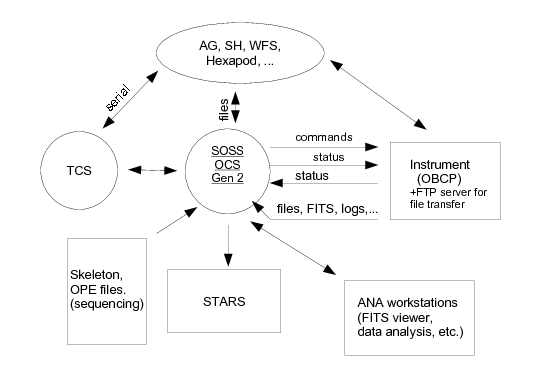

Eric Jeschke
Subaru Telescope/National Astronomical Observatory of Japan
eric@naoj.org
Figure 1. Subaru Telescope Subsystem Overview (figure courtesy Scot
Kleinman)

On the right-hand side of this figure, you can see the OBCP and its interfaces with the OCS. This interface encompasses four basic "channels":
The SIMCAM API
To interface with the SIMCAM framework, a Python module is created which
defines at least one class inheriting from the BASECAM class. This
inheritance provides the class with some abstract superclass methods
and attributes that will normally be overridden by the subclass.
#
# My new instrument
#
from SIMCAM import BASECAM, CamError, CamCommandError
...
class MYCAM(BASECAM):
....
There are several example modules included for real instruments that are
used at Subaru. Examining these example modules you will see what
arguments are necessary for the class constructor (also described in the
section below Putting it all together: the
SIMCAM cam).
For methods defined inside the class there are a number of useful
convenience methods for logging, running concurrent tasks and
interacting with the OCS.
class MYCAM(BASECAM):
...
...
#######################################
# INSTRUMENT COMMANDS
#######################################
def snap(self, frameid=None, itime=10.0):
self.logger.debug("snap called.")
...
...
Defines a new instrument MYCAM that contains an
invocable command called snap (presumably some kind of exposure
command), with parameters frameid and itime. From
the OCS side, commands are case-insensitive, so the command might be
invoked as snap, SNAP, Snap, sNAp, etc. On the Python side the method name
should be defined in lower case.
Parameters should be defined as Python keyword arguments, with default values that will be assigned if they are not supplied at the time of invocation.
The command does whatever it needs to do (calling other methods, etc). There are several possible scenarios for command completion:
CamCommandError exception (or a
subclass thereof). This is the preferred way of signaling an
error. An error is reported to the OCS using the exception string
and no traceback is logged.
return statement), the
return code is None. That covers this case.
Note that since the framework is multi-threaded, executing a command does not
prevent other commands from being received and processed. Although the
API methods of the SIMCAM framework are thread-safe, it is up to the
developer to make sure that shared instance state in the subclass is
protected via standard thread-safety techniques such as semaphores,
locks, condition variables, etc.
The threading and Queue packages in the
standard Python library provides many useful classes for this purpose.
Although commands are typically driven from the OCS side, an instrument
can set up it's own autonomous command invocations. The SIMCAM framework
includes a thread pool and some common methods for executing a method or
function on it (see section below "Creating concurrent tasks").
Alternatively you may choose to create and invoke threads
using the Python threading library directly. Either way, a method
can be spawned off into an independent self-timed loop for handling periodic
tasks.
Since Python is a dynamic, interpreted language, the turnaround time for
developing and debugging new commands is very fast. Simply add new methods
to the module in an editor and restart simcam.
Requesting external status
Although commands are typically initiated from the OCS side, requests for
status values are initiated from the instrument side. A typical example is
when taking an exposure, the instrument needs the telescope pointing values
for RA and DEC before and after the exposure for the purpose of creating
a FITS file.
The SIMCAM framework provides a method in a delegate object for fetching
external status values. Let's enhance our snap method to
illustrates how it is used:
def snap(self, frameid=None, itime=10.0):
"""
A command to open the shutter of the camera and begin exposure.
"""
...
# Create a dictionary, whose keys are status aliases we want
statusDict = {'STATS.RA': None, 'STATS.DEC': None}
try:
self.ocs.requestOCSstatus(statusDict)
except CamError, e:
# Some kind of error occurred--bail out
raise CamCommandError("Failed to obtain status: %s" % str(e))
# Successful call, get values
ra, dec = (statusDict['STATS.RA'], statusDict['STATS.DEC'])
self.logger.debug("ra=%s, dec=%s" % (ra, dec))
# Do other snap stuff...
...
...
There are a couple of things to note about this example. One is the use
of the logging facility. If the run-time logging level is set to
include debug, then the information about the ra and dec will be logged.
The second is the use of Exceptions to catch and signal errors. Note
that the call to
requestOCSstatus() is wrapped in a try/except
clause, and that we re-raise the error as a CamCommandError
if we run into trouble. We could also simply return an error code, or
an error code and message, as described in the section on command processing. Thirdly, note how we create
a dictionary with the keys of the OCS status items for which we want
values. These keys are called status aliases. There are
hundreds upon hundreds of them. Someday hopefully we will have a manual
to describe them all. Until then, your best bet is to examine the code
in the example cam modules or ask a member of the Subaru OCS software
team or a Subaru support scientist what the aliases are for
the status values you need, and what the type of those values are.
The call to self.ocs.requestOCSstatus() fills in the dictionary
with the values fetched from the OCS. The values are given the appropriate
type for the kind of status that they are (float, int, string, etc.).
In this case, the STATS.RA and STATS.DEC values are defined as string
values in the OCS, which is why they are returned as such.
Of course, convenience methods could be defined for fetching different sets
of commonly needed status items and massaging them as appropriate.
We should point out that in many cases, an attempt to fetch a valid status alias that has no currently defined value (or even an invalid status alias) may not raise an exception. Instead, that particular dictionary element will have an error value in it, and the whole status call will succeed, because the OCS system returns these error values without signaling an overall error to the low level interface. These individual errors may be checked for by comparing the values with the following method (compare to above):
def snap(self, frameid=None, itime=10.0):
"""
...
...
try:
self.ocs.requestOCSstatus(statusDict)
except CamError, e:
# Some kind of error occurred--bail out
raise CamCommandError("Failed to obtain status: %s" % str(e))
results = self.ocs.validateStatus(statusDict)
if len(results) > 0:
self.logger.error("Values are invalid for: %s" % str(results))
for alias in results:
...
...
...
...
The code could then examine the particular aliases to see if it is
possible to proceed without them.
#######################################
# INITIALIZATION
#######################################
def initialize(self, ocsint):
super(SIMCAM, self).initialize(ocsint)
self.logger.info("initialize() called")
# Grab my handle to the OCS interface.
self.ocs = ocsint
# Get instrument configuration info
self.obcpnum = self.ocs.get_obcpnum()
self.insconfig = self.ocs.get_INSconfig()
...
...
# Get our 3 letter instrument code and full instrument name
self.inscode = self.insconfig.getCodeByNumber(self.obcpnum)
self.insname = self.insconfig.getNameByNumber(self.obcpnum)
self.statusTblName = ('%3.3sS0001' % self.inscode)
# Used to format status buffer (item lengths must match definitions
# of status aliases on OCS side in .../StatusAlias.pro)
statfmt = "%(status)-8.8s,%(mode)-8.8s,%(count)8d;"
# Register my status.
self.mystatus = self.ocs.addStatusTable(self.statusTblName,
['status', 'mode', 'count',
'last_frame'],
formatStr=statfmt)
...
...
This code example shows the initialize method, which is part
of the standard boilerplate code used in initializing the instrument module
(see Putting it all together: the SIMCAM
cam). When called, the parameter ocsint is a handle to
the OCS interface delegate object.
After calling the superclass constructor, the method stores this away in its
internal state in the variable ocs (you encountered this variable
in earlier examples, now you see where it came from).
Using that handle, the initialize method can now invoke delegate calls to the interface to accomplish various things. First, it finds out it's own OBCP number (all Subaru instruments are enumerated), followed by it's code (official 3-letter acronym) and full name (canonical name).
It then constructs a table name (which must exist on the OCS side; the
example shows the canonical table name for an instrument), a table
format (a format string describing
how to pack the status values into the buffer) and then makes a call to
addStatusTable() to create a table, containing the listed
status elements, and connecting it to the format string.
Getting and setting internal status
Beyond the boilerplate code, status values can be set any time, anywhere
in the module by simply assigning the values to the status table object
(you can also create multiple table objects) in dictionary style, or using
any of several convenience methods:
...
# dictionary style interface...
self.mystatus['status'] = 'ALIVE'
self.mystatus['last_frame'] = ''
# Convenience method, with keyword arguments:
self.mystatus.setvals(status='ALIVE', last_frame='')
...
# Convenience method, with dictionary:
statusDict = {'status': 'ALIVE', 'last_frame': ''}
self.mystatus.store(statusDict)
...
The advantage of using the convenience functions is that it ensures that all
the listed status items are updated together, and not intermixed if
another thread is also updating, or reading, status.
Similarly, to read your own (instrument) status, you can either access the items dictionary style, or use convenience methods:
...
# dictionary style interface...
last_frame = self.mystatus['last_frame']
# Multiple items can be fetched, atomically as a group
(status, last_frame) = self.mystatus.fetchList(['status',
'last_frame'])
# Or you can use a dict, to get them as a group
statusDict = {'status': None, 'last_frame': None}
self.mystatus.fetch(statusDict)
...
Again, using the convenience methods insures that all the status items are
fetched as a group, atomically. The goal here is to abstract as much as
possible the OCS internal representation of status. For Gen2, it is
likely that the old status interface will be retained for some time.
However, using this abstraction
means that only the boilerplate code in initialize will
likely need to be changed for an all new Gen2 status interface.
def putstatus(self, tableName="ALL"):
"""Export of our status.
"""
if tableName == 'ALL':
res = self.ocs.exportStatus()
else:
res = self.ocs.exportStatusTable(tableName)
return res
The exportStatus and exportStatusTable
delegate methods cause the current status table objects (all objects or
a specific one, respectively) to be collapsed into buffers according to
the buffer format string and transmitted to the OCS.
The putstatus method then becomes a convenience function for
the class, that can be called from anywhere to push out status, as well as a
command that can be invoked from the OCS side to test status transfers.
We are now in a position to modify our snap method to send some status that indicates the last frame saved:
def snap(self, frameid=None, itime=10.0):
...
...
# Do other snap stuff...
...
# Assuming command was successful:
self.mystatus.setvals(last_frame=frameid)
self.putstatus()
def archive_data_file(self, frameid, fitspath):
self.logger.info("Archiving FITS file '%s' to the OCS" % frameid)
self.ocs.archive_frame(frameid, fitspath)
# If no exceptions raised, then we end up here. Update status
# to indicate last frame saved
self.mystatus.setvals(last_frame=frameid)
self.putstatus()
As you can see the self.ocs.archive_frame() call takes a
frame id (like 'SUKA00048245') and the path to the FITS file. The FITS
file does not need to have the name be the frameid. The call will
send a file transfer request to the OCS to ask it to copy the file,
renaming it on the other end as the frame id.
Note that in order for the OCS to transfer the files, an FTP service should be configured and running on the OBCP. There are several good open-source FTP servers such as 'vsftp'. Pick any one.
We are now in a position to modify our snap method to archive the file:
def snap(self, frameid=None, itime=10.0):
...
...
# Do other snap stuff...
fitspath = ...
# Create fits file...
...
self.archive_data_file(frameid, fitspath)
snap
examples, you can see that the frameid was passed in to that command.
This is the prototypical way that instruments operate at Subaru: FITS
files to be archived are only created at the behest of a OCS initiated
command, and such commands will be designed to take the frame id or
an initial frame id and a count (in the case of generating multiple
files).
In the rare case that your instrument needs to autonomously allocate a
frame id and archive a file, you can use the getFrame()
method to allocate a frame. The following example shows how this would
be done:
...
...
# get a frame id
frameid = self.getFrame('A')
# Create fits file...
fitspath = ...
...
self.archive_data_file(frameid, fitspath)
'A' frames are raw science frames. 'Q' frames are processed science
frames. You should use either 'A' or 'Q' according to the kind of data
to be archived.
Creating concurrent tasks
For many commands, the control flow would work out something like this:
import SIMCAM.cams.common as common
...
...
def snap_async(self, frameid=None, itime=30.0):
"""Snap command that returns immediately, then later finishes
asynchronously.
"""
self.logger.info("long_snap called...")
if not frameid:
raise CamCommandError("No frame number passed!")
self.logger.info("Starting concurrent task")
t = common.FuncTask(self.snap, (), frameid=frameid,
itime=itime)
t.init_and_start(self)
This command creates a generic function-calling task that will
call the method snap with no positional arguments and
the exact same keyword arguments that it was called with. Then it
initializes and starts the task. The function will be called by another
thread in the framework's thread pool, leaving this thread to exit the
current command.
The general problem with this sort of approach is the same as for any
asynchronous command: what to do if the command fails. The initial
command completed with success, but how do you track the result of the
asynchronous part? Typically this would be handled via status value
notification. Alternatively, another way that this can be handled is to
have a 2-phase command. For
example, snap() may initiate an exposure and return immediately.
A second command (e.g. readout) is sent later by the OCS
to read out the CCD, create the FITS files and archive them.
There are a few common enough tasks that they have been added as a
module of common task code that can be used by any SIMCAM instrument.
We'll go over two such examples.
Handling Power Failure
The Subaru summit is covered by an extensive UPS system, which is
designed to protect instruments against power variability. One of the
requirements of OBCPs is that they monitor the power situation and shut
down in a timely and orderly fashion when there is a summit power
outage. The SIMCAM framework provides a task for monitoring the power
and calling a method powerOff() if the power ever goes
down. Assuming that you implement that method, then it suffices to
start up the monitoring task when your instrument comes up, and stop it
when it goes down:
def start(self, wait=True):
super(MYCAM, self).start()
...
...
# Start task to monitor summit power
t = common.PowerCheckTask(self, self.powerOff, self.powerOn,
interval=10.0)
self.power_task = t
t.init_and_start(self)
...
...
def stop(self, wait=True):
super(MYCAM, self).stop()
...
...
# Terminate power checking task
if self.power_task != None:
self.power_task.stop()
self.power_task = None
...
...
This code illustrates two more methods of interest. start
is called after initialize, and should contain whatever
code you need to "start" your instrument. stop is called
when the instrument is to be stopped (but not terminated). You might
then write your powerOff method as:
def powerOff(self):
"""
This method is called when the summit begins to run on UPS
power. Effect an orderly shutdown.
"""
...
...
self.stop()
res = os.system('/usr/sbin/shutdown -h 60')
self.ocs.shutdown(res)
Here stop() calls your method to stop the things your
instrument needs to, and shutdown tells the SIMCAM
framework you wish to terminate the program with an exit code of
whatever the system shutdown command returned.
Sending Periodic Status
Our second example is used to illustrate the sending of periodic
status. The Subaru OCS likes to receive periodic status updates from
the instrument as a kind of heartbeat, to indicate that the instrument
is up and running. The exact interval is not that important, and
instruments use anything from 5 seconds to 5 minutes. A reasonable
interval might be 60 seconds. Assuming you have defined a
putstatus method as described earlier, you can effect that
simply by invoking the common task:
def start(self, wait=True):
...
...
# Start task to periodically send status
t = common.IntervalTask(self.putstatus, 60.0)
self.status_task = t
t.init_and_start(self)
The IntervalTask simply runs the given function at the
given intervals. Stopping it is similar to the power monitoring example.
MYCAM, from top to
bottom:
#
# MYCAM.py -- shell for a new instrument MYCAM on the SIMCAM framework
#
#[ Eric Jeschke (eric@naoj.org) --
# Last edit: Mon Apr 14 17:18:54 HST 2008
#]
#
"""
This file implements a simulator for a simulated instrument (SIMCAM).
"""
import sys, os, time
import threading
from SIMCAM import BASECAM, CamError, CamCommandError
import SIMCAM.cams.common as common
class MYCAMError(CamCommandError):
pass
class MYCAM(BASECAM):
def __init__(self, logger, env, ev_quit=None):
super(MYCAM, self).__init__()
self.logger = logger
# Convoluted but sure way of getting this module's directory.
# Useful if we need to load some files.
self.mydir = os.path.split(sys.modules[__name__].__file__)[0]
self.ev_quit = ev_quit
self.ocs = None
self.mystatus = None
#######################################
# INITIALIZATION
#######################################
def initialize(self, ocsint):
"""
Initialize this instrument for use, but do not start it.
"""
super(MYCAM, self).initialize(ocsint)
self.logger.info('***** INITIALIZE CALLED *****')
# Grab my handle to the OCS interface.
self.ocs = ocsint
# Get instrument configuration info
self.obcpnum = self.ocs.get_obcpnum()
self.insconfig = self.ocs.get_INSconfig()
# Thread pool for autonomous tasks
self.threadPool = self.ocs.threadPool
# Required instance variables for starting tasks:
self.tag = 'mycam'
self.shares = ['logger', 'ev_quit', 'threadPool']
# Used to format status buffer (item lengths must match definitions
# of status aliases on the OCS side in .../StatusAlias.pro)
statfmt = "%(status)-8.8s,%(mode)-8.8s,%(count)8d;"
# Get our 3 letter instrument code and full instrument name
self.inscode = self.insconfig.getCodeByNumber(self.obcpnum)
self.insname = self.insconfig.getNameByNumber(self.obcpnum)
self.statusTblName = ('%3.3sS0001' % self.inscode)
# Register my status table.
self.mystatus = self.ocs.addStatusTable(self.statusTblName,
['status', 'mode', 'count'],
formatStr=statfmt)
# Establish initial status values
self.mystatus.setvals(status='ALIVE', mode='LOCAL', count=0)
# Handles to periodic tasks
self.status_task = None
self.power_task = None
# Lock for handling mutual exclusion
self.lock = threading.RLock()
def start(self, wait=True):
super(MYCAM, self).start()
self.logger.info('***** MYCAM STARTED *****')
# Start auto-generation of status task
t = common.IntervalTask(self.putstatus, 60.0)
self.status_task = t
t.init_and_start(self)
# Start task to monitor summit power
t = common.PowerCheckTask(self, self.powerOff, self.powerOn,
interval=10.0)
self.power_task = t
t.init_and_start(self)
def stop(self, wait=True):
super(MYCAM, self).stop()
# Terminate status generation task
if self.status_task != None:
self.status_task.stop()
self.status_task = None
# Terminate power check task
if self.power_task != None:
self.power_task.stop()
self.power_task = None
self.logger.info('***** MYCAM STOPPED *****')
#######################################
# INTERNAL METHODS
#######################################
# Whatever internal methods you want go here. You can begin the
# name with underscore (_) to make it private
#######################################
# INSTRUMENT COMMANDS
#######################################
def sleep(self, sleep_time=0):
"""One of the commands that are in the OBCPTEST.cd
"""
self.logger.info("\nSleeping for %d sec..." % sleep_time)
time.sleep(sleep_time)
self.logger.info("Woke up refreshed!")
def obcp_mode(self, motor='OFF', mode=None):
"""
One of the commands that are in the OBCPTEST.cd
"""
self.lock.acquire()
try:
mode = self.mystatus['mode']
if mode == 'LOCAL':
self.mystatus.setvals(mode='SLAVE')
else:
self.mystatus.setvals(mode='LOCAL')
finally:
self.lock.release()
self.putstatus()
def fits_file(self, motor='OFF', frame_no=None):
"""
One of the commands that are in the OBCPTEST.cd.
"""
# Create FITS file (pyfits module is really useful here)
# fitspath = ...
self.ocs.archive_frame(frame_no, fitspath)
def putstatus(self, target="ALL"):
"""
Forced export of our status.
"""
self.ocs.exportStatus()
def getstatus(self, target="ALL"):
"""
Forced import of status.
"""
# Create a dictionary, whose keys are status aliases we want
statusDict = {'STATS.RA': None, 'STATS.DEC': None}
try:
self.ocs.requestOCSstatus(statusDict)
except CamError, e:
# Some kind of error occurred--bail out
raise CamCommandError("Failed to obtain status: %s" % str(e))
# Successful call, get values
ra, dec = (statusDict['STATS.RA'], statusDict['STATS.DEC'])
self.logger.debug("ra=%s, dec=%s" % (ra, dec))
def powerOff(self):
"""
This method is called when the summit begins to run on UPS
power. Effect an orderly shutdown.
"""
self.stop()
try:
res = os.system('/usr/sbin/shutdown -h 60')
except OSError, e:
self.logger.error("Error issuing shutdown: %s" % str(e))
self.ocs.shutdown(res)
def powerOn(self):
"""
This method is called when the summit begins to run on line
power again.
"""
pass
#END MYCAM.py
simcam.py that
provides the appropriate environment for running a SIMCAM module. A
typical invocation of this program to start the instrument might be as
follows:
$ ./simcam.py --cam=MYCAM --loglevel=0 --log=mycam.log --stderr \ --paradir=../SkPara/cmd/MYCAMThis says to start up the instrument with the log directed to the file "mycam.log", an additional copy of the logging directed to stderr, and the logging level set to 0 (log everything). The PARA files will be loaded from the path
../SkPara/cmd/MYCAM.
Invoking the program with the --help option will list all
options and their usage.
Appendix A: Considerations for SOSS Compatibility Mode
SOSS Compatibility Mode is a mode of operation of Gen2 that
maintains a level of backward compatibility for legacy observation
scripts written for SOSS, Subaru's first OCS. This section
describes some considerations for developing observations that are
compatible with either Gen2 or SOSS.
Abstract commands are written using a macro template language and the templates are stored as skeleton files. The macro language includes some primitive control structures that implement the equivalent of iteration, subroutine calls, etc. Ultimately, the processing of skeleton files devolves into sequential or concurrent issuance of device dependent commands to one of the distributed subsystems. In this manner, potentially complex patterns of interdependent distributed command execution on the four subsystems is realized.
status value from earlier may be known on the
SOSS side as MNI.STATUS (assuming that "MYI" is the code
for "My New Instrument").